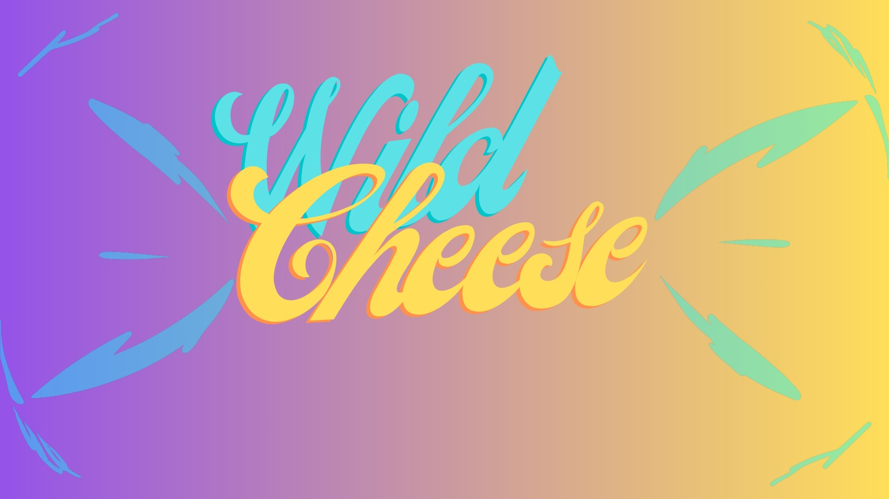

Se sortean los equipos
La gracia del evento empieza antes de la partida: los rosters se forman al azar para mezclar estilos y jugadores.
Torneo Wild Rift 5v5
Wild Cheese mezcla estrategia, improvisacion y comunidad en un formato hecho para salir de la rutina. Aqui puedes consultar el estado del torneo, revisar las reglas y preparar la composicion que te toque.

Como Funciona
La gracia del evento empieza antes de la partida: los rosters se forman al azar para mezclar estilos y jugadores.
Cada cruce puede cambiar por completo tu plan. Hay composiciones de control, engage, poke, sigilo y mas.
Los campeones son obligatorios, pero la posicion, la build y la ejecucion dependen de la comunicacion del equipo.
Consulta Rapida
Hemos reorganizado el sitio para que las reglas, las composiciones y el cuadro del torneo se entiendan mucho mejor en movil y escritorio.